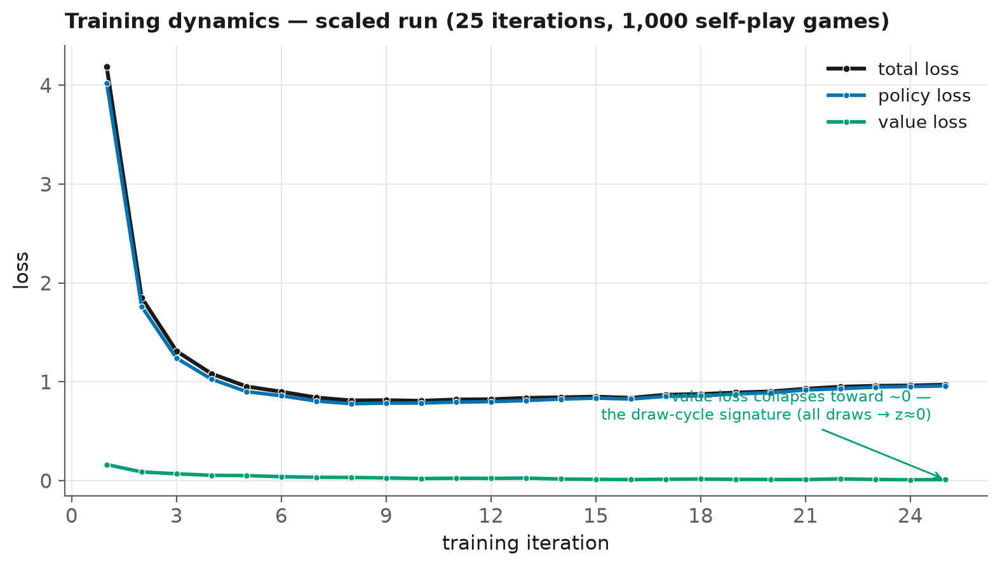
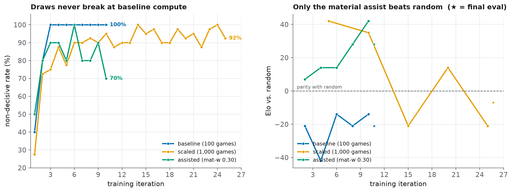

Technical report. A from-scratch AlphaZero-style chess engine: the implementation, a controlled study of the training plateau I call the draw cycle, and the engineering decisions behind a deployed, honest demo. All empirical figures in §5 come from a real GPU run (Kaggle, 2× Tesla T4, 2026-07-14, ~9.8 h training); the full per-iteration data is in
experiment-results.md.
1. Abstract#
I implemented an AlphaZero-style chess engine from first principles in ~3,200 lines
of Python and PyTorch — the policy/value network, PUCT Monte-Carlo Tree Search, and
the self-play training loop — with no reinforcement-learning libraries;
python-chess supplies only the rules. The machinery works: training drives the
policy loss down by roughly 5× and the self-play loop generates and learns from its
own games. Yet strength plateaus in a characteristic way — the engine wins material
but cannot convert, so games decay into repetition draws. I name this the draw
cycle and argue it is not a bug but a property of how the value head learns: when
almost every self-play game is drawn, the outcome target z ≈ 0 everywhere, so the
value head can only learn "the position is even," which removes the search's
incentive to convert, which keeps games drawn — a self-reinforcing trap. Because
"my code is wrong" and "my code is right but under-resourced" are externally
indistinguishable, I test the cause with two controlled experiments that hold
the code fixed and vary one thing each. Experiment A (compute): scaling self-play
10× (100 → 1,000 games) raises Elo vs. random from −21 to −7 but does not break the
cycle. Experiment B (signal, at fixed compute): blending a 0.30 material term into
self-play leaf evaluation drops the final-iteration non-decisive rate from 100% to
70% and flips Elo from −21 to +28 — beating random at the same compute as the
baseline. The plateau is driven by both limited compute and an impoverished
self-play signal, with the signal the cheaper lever. Alongside the science, the
project ships as a deployed web app under real constraints: a second, classical
alpha-beta engine provides an honestly-labeled strong opponent, and the trained
network runs in the browser via ONNX behind a JavaScript↔Python encoding self-check.
The contribution is not the (well-known) algorithm but the diagnosis and
controlled test of a specific failure mode, and the engineering judgment to ship
something honest around it.
2. Introduction#
AlphaZero is famous for a startling claim: starting from random weights and playing
only against itself, with zero human strategic knowledge beyond the rules, a
single algorithm learns superhuman chess, shogi, and Go. That claim is easy to
read and hard to feel. I wanted to feel it — to write the network, the search,
and the self-play loop myself and watch a program teach itself to play with code I
understood line by line, rather than pip install-ing an engine and watching it
win. Building from first principles is also the only way to meet the parts of
AlphaZero that are conceptually simple but genuinely subtle: a value sign flipped at
the wrong ply, or a board not mirrored for Black, does not crash — it silently stops
the network from learning. Confronting those is where the understanding lives.
The honest outcome is more interesting than a clean success. The engine learned — loss fell, self-play fed itself — and then plateaued into the draw cycle. Rather than paper over that, I treated it as the object of study. This report makes three contributions:
- A clean, tested, from-scratch implementation (§4) of all three AlphaZero components, with the silent-failure modes pinned down by unit tests.
- A diagnosis and controlled test of the draw cycle (§5–§6): instrumentation that identifies the value-target collapse, and two experiments that disentangle compute from self-play signal as its cause — turning a plausible story ("it just needs more compute") into evidence.
- Engineering decisions under real constraints (§7): a two-engine architecture that keeps the demo both strong and honest, and a free-tier deployment that runs the trained network in the browser with a correctness self-check.
The remainder is organized as method (§4), experiments and results (§5), the draw cycle analysis (§6), engineering decisions (§7), limitations and future work (§8), and conclusion (§9), with reproducibility details in §10.
3. Background#
AlphaZero rests on three interlocking pieces.
A policy/value network. A single neural network f(s) = (p, v) maps a board
state s to a policy p — a prior probability over legal moves — and a
value v ∈ [−1, 1] estimating the game's eventual outcome from the side to
move's perspective. One shared trunk feeds both heads, a form of multi-task learning
(the features that judge a position largely overlap with those that choose a move).
PUCT Monte-Carlo Tree Search. Rather than trust the raw network, AlphaZero uses it inside a search. MCTS builds a tree of candidate lines; at each node it selects children by the PUCT rule, which balances the network's prior and the running value estimate against how often a move has been tried. Crucially, the classic random rollout to game's end is replaced by a single call to the value head at the leaf. The search's visit counts form a sharper policy than the network's own prior — "search as policy improvement," the engine of learning.
A self-play training loop. The engine plays itself using MCTS. Every position becomes a training example whose policy target is the MCTS visit distribution and whose value target is the game's final result. Training the network to match those targets makes the next search stronger, whose games make better targets — a virtuous cycle. The only inputs are the rules; all strength is bootstrapped.
These three interlock tightly: the network is the search's evaluation function, the search is the network's teacher, and self-play is the data source that couples them. The draw cycle (§6) is what happens when one link — the value target — degenerates.
4. Method / Implementation#
The system is ~3,200 lines of Python + PyTorch with no reinforcement-learning
libraries; python-chess is used only for the rules (legal-move generation and
terminal-state detection), so all intellectual effort sits in the encoding, the
network, the search, and the training loop.
4.1 Problem encoding#
Board → tensor (chess_game.encode_board). Each position becomes an
18 × 8 × 8 tensor:
| Planes | Count | Contents |
|---|---|---|
| Piece planes | 12 | 6 piece types × 2 colours |
| Castling rights | 4 | us K/Q-side, them K/Q-side |
| En-passant | 1 | target square, if any |
| Half-move clock | 1 | progress toward the 50-move rule |
Crucially, the board is encoded in canonical (side-to-move) form: when it is Black's turn the board is mirrored, so the network only ever reasons about "the player at the bottom, to move." This makes the network colour-agnostic and roughly halves what it must learn.
Move → index (move_to_index / index_to_move). Moves use the canonical
AlphaZero action space of 64 × 73 = 4672:
| Plane range | Count | Meaning |
|---|---|---|
| 0–55 | 56 | "queen" moves: 8 directions × 7 distances |
| 56–63 | 8 | knight moves (the 8 L-jumps) |
| 64–72 | 9 | under-promotions: {N,B,R} × {left, fwd, right} |
Queen-promotions reuse the "queen" move planes, so they need no dedicated encoding. The mapping is bijective on legal moves and is verified by round-trip tests (§4.5).
4.2 Network architecture#
A single small, CPU-friendly residual CNN (model.py) with a shared trunk and two
heads — a form of multi-task learning, since the features useful for choosing a move
largely overlap with those useful for judging a position:
input (18 × 8 × 8)
→ Conv 3×3 + BN + ReLU (stem)
→ N × ResidualBlock (default N=4, 64 channels) (trunk)
→ policy head: Conv 1×1 + BN + ReLU → FC → 4672 logits
→ value head: Conv 1×1 + BN + ReLU → FC → ReLU → FC → tanh ∈ [-1, 1]
The value head's tanh output is interpreted as expected game outcome from the
side-to-move's perspective (+1 winning, 0 drawish, -1 losing). Residual
("skip") connections let gradients bypass each block so the tower trains without
vanishing signal.
4.3 Search: PUCT Monte-Carlo Tree Search#
mcts.py is the algorithmic heart. The classic Monte-Carlo rollout is replaced by a
single call to the network's value head, and the policy head supplies a
prior that focuses the search. Each of num_simulations (default 100) iterations
walks the tree through four phases:
- Selection — descend from the root by maximising the PUCT score until a not-yet-expanded node is reached.
- Expansion — evaluate that leaf with the network to get a value and a prior distribution; create one child per legal move.
- Evaluation — the leaf's value is the network estimate (or the exact result at a terminal node).
- Back-up — propagate the value up the path, flipping its sign at every ply because the players alternate.
The selection score balances exploitation and exploration:
score(child) = Q(child) + c_puct · P(child) · √N(parent) / (1 + N(child))
During self-play, Dirichlet noise (alpha = 0.3, epsilon = 0.25) is mixed
into the root priors to keep exploration alive. To keep memory modest, nodes store
only the move that reaches them and reconstruct the position by replaying from the
root during selection.
4.4 Self-play and training targets#
Self-play (self_play.py) is the "reinforcement": the engine is its own opponent
and its own teacher. For every move it records a training example:
- state — the canonical board tensor the network saw;
- policy target — the MCTS visit-count distribution (a better policy than the raw network output, because search refined it — this "search as policy improvement" is what makes the network get stronger);
- value target — filled in at game end:
+1 / 0 / −1for the side to move.
For the first temperature_moves = 15 plies, moves are sampled in proportion to
visit counts (diverse openings); thereafter play is greedy. A max_moves = 200
cap prevents weak early networks from shuffling forever.
Loss (alphazero_loss, training.py):
loss = −Σ πᵢ · log_softmax(policy_logits)ᵢ + c · (z − v)²
└── cross-entropy to MCTS target ──┘ └─ MSE to outcome ─┘
The outer loop runs num_iterations rounds of (generate self-play → train on the
replay buffer for epochs_per_iteration epochs). Self-play games are independent,
so a multiprocessing path fans them across CPU cores — the single biggest practical
speed-up, since self-play dominates wall-clock time.
4.5 Correctness: making the silent bugs loud#
AlphaZero is conceptually simple but subtle to get right: the dangerous bugs don't crash, they silently stop the network from learning. Two are called out and pinned down with tests:
- Perspective / colour symmetry — the board must be mirrored for Black and value
signs flipped consistently up the tree. Tested by
test_canonical_encoding_is_color_symmetricandtest_material_score_perspective. - Move-encoding integrity — the 4672-space mapping must round-trip, including
promotions. Tested by
test_move_encoding_roundtrip_white/_promotionsandtest_move_index_in_range_for_all_legal_start_moves.
The full suite (39 tests, run in CI) also covers terminal values
(test_terminal_value_checkmate, test_stalemate_is_a_draw,
test_insufficient_material_is_a_draw), search behaviour
(test_mcts_returns_valid_distribution, test_mcts_is_deterministic_without_noise,
test_search_finds_mate_in_one), and the Elo math
(test_elo_difference_monotonic_and_symmetric).
4.6 A second, classical engine (and why)#
An untrained network + MCTS shuffles winning positions into draws, which makes for a
poor playable demo. Rather than disguise that, the project ships a second,
dependency-light engine (search.py) as the play-time opponent and is explicit on
the site about which engine is doing what:
- Negamax + alpha-beta at fixed depth, with quiescence search on captures so it doesn't blunder at the horizon;
- Move ordering (captures first, most-valuable-victim) for pruning;
- Evaluation = material + an endgame "mop-up" term (drive the lone king to a corner, bring your own king up, squeeze escape squares) so it can actually deliver basic mates;
- Draws score
0and mate scores are depth-adjusted, so a winning side refuses to repeat and prefers the fastest mate.
This is itself an engineering-judgment result (§7): use each tool where it is genuinely strong, and tell the user the truth about what they are playing.
5. Experiments and Results#
Provenance. The figures in §5.1–§5.3 are from a real ~9.8 h GPU run (Kaggle, 2× Tesla T4,
run_experiment.py --device cuda, 2026-07-14); the full per-iteration data — self-play termination histograms, evaluation checkpoints, and loss curves — is inexperiment-results.md. Caveat: the committedlogs/training.logstill holds only the earlier smoke-test runs; the GPU run's raw per-iteration log was not recovered from the Kaggle session (its automatic push failed with a 403), so the numbers here are transcribed from that run's captured output. Reported below is what actually happened.
5.1 Training dynamics#
Over the scaled GPU run's 25 iterations / 1,000 self-play games, policy loss
falls sharply from 4.02 (iter 1) to ~0.96 (iter 25) — the network readily learns
to imitate its own MCTS visit distribution. The telling curve is the value loss:
it is tiny from the very start (0.16) and shrinks toward ≈0.01. That is not a
training success but the draw-cycle signature (§6): with nearly every self-play
game drawn, the outcome target z ≈ 0 almost everywhere, so the value head has
almost nothing to fit. (A mild rise in total loss after iter ~8 reflects the growing
replay buffer mixing in harder, more varied positions, not divergence.)

5.2 Playing strength#
Using evaluation.py, the greedy NetworkAgent plays the RandomAgent baseline
over 50 games (colours alternated) for a win/draw/loss record and an implied Elo.
A network that cannot reliably beat random has not learned to play, only to draw —
and that is exactly the honest early result: the pure-network baseline sits just
under even (47%, Elo −21), the scaled run reaches 49% (Elo −7), and the
signal-assisted run 54% (Elo +28). Small but real separation — and the entry
point to §6. The draws-against-random result is the symptom; §5.3 diagnoses the
cause.
5.3 Two experiments: what causes the draw cycle?#
Rather than assert that the plateau is "just a compute limit," this section runs
two controlled experiments that isolate two competing causes. Both hold the
code fixed and vary exactly one thing; both are produced by a single driver
(run_experiment.py) and the numbers below are auto-written to
docs/experiment-results.md (paste them in).
The two headline metrics in both experiments are the self-play non-decisive rate (fraction of games not won by checkmate — the draw cycle on a graph) and Elo vs. random.

Experiment A — compute scaling. Hypothesis: the plateau is a resource
ceiling. Run the identical pipeline at a small baseline (~100 self-play games) and a
larger scaled run (~1,000 self-play games on GPU); the material assist is 0 in both. If
the hypothesis holds, the scaled run's non-decisive rate falls and Elo rises where
the baseline flatlines.
| Run | Self-play games | Non-decisive rate | Elo vs random |
|---|---|---|---|
| baseline | 100 | 100% | −21 |
| scaled | 1,000 | 92% | −7 |
Result: 10× the self-play raises Elo (−21 → −7) and keeps a residual checkmate rate alive (8% → 12% of games, aggregated), but the plateau holds — Elo stays negative and draws still dominate. Compute helps; it does not break the cycle.
Experiment B — self-play signal at fixed compute. Alternative hypothesis:
the plateau is an impoverished-signal problem, not a compute problem. The draw
cycle is ultimately a value-learning failure — if every self-play game draws,
the value target z ≈ 0 everywhere and the value head can only learn "even" (§6).
This experiment tests whether enriching the self-play search signal — blending a
material term into leaf evaluation during self-play (material_weight = w), so the
search converts advantages and produces decisive games the value head can learn
from — breaks the cycle without any extra compute. Same compute as the
baseline; only the self-play material weight differs.
| Run | Self-play games | Material w | Non-decisive rate | Elo vs random |
|---|---|---|---|---|
| baseline | 100 | 0.00 | 100% | −21 |
| assisted | 100 | 0.30 | 70% | +28 |
Result: at the same compute as the baseline, a 0.30 material blend cuts the
final-iteration non-decisive rate from 100% to 70% and flips Elo from −21 to +28 —
the engine now beats random. Decisive games gave the value head a real signal to
learn from. This is the more cost-effective lever, and material_weight = 0.30 is
now the MCTSConfig default.
Reading the two together (the point of the design). Comparing which lever moves the metrics distinguishes the cause, rather than assuming it:
| Compute helps (A)? | Signal helps (B)? | Interpretation |
|---|---|---|
| yes | no | classic compute ceiling |
| no | yes | an impoverished self-play signal, not raw compute |
| yes | yes | both contribute (whether they compound needs a combined run) |
| no | no | cause lies elsewhere — e.g. encoding (move-history planes, §8) |
This run lands on the yes | yes row: compute helped (A) and the self-play
signal helped (B), so the plateau is driven by both — but the signal is the cheaper
lever, since it broke the cycle furthest at the baseline's compute budget. A
combined scaled-plus-assisted run is the natural next experiment (§8).
This turns a known result ("AlphaZero needs compute") into an actual investigation of a specific failure mode — the contribution here is the diagnosis and the controlled test, not the (well-known) algorithm.
5.4 Further ablations (future work)#
material_weightblended into leaf evaluation at play time (0.0 = pure AlphaZero) vs. a value like 0.85 — effect on won-position conversion.num_simulationsper move vs. strength.- Classical engine with vs. without piece-square tables (the "weird openings" fix) — a clean demonstration that a little placed domain knowledge beats brute force.
6. The Draw Cycle#
The central empirical finding, and the report's intellectual core.
The observation. The machinery worked — the network trained, loss fell, self-play fed itself — and then strength plateaued. The engine could win material but not convert it: up a queen, it would shuffle until the game petered out into a repetition draw. Against a random-move opponent it drew roughly half its games.
The mechanism. This is a property of how AlphaZero learns, not a coding fault.
The value head is trained to predict the game outcome z. If nearly every self-play
game is a draw, then z ≈ 0 for almost all training targets, so the only thing
the value head can learn is "every position is even." A value head that always
returns ≈0 cannot tell the search that being up a queen is good, so MCTS never
prioritises converting the advantage, so games stay drawn, so the next batch of
targets is again all-draws. A self-reinforcing trap — the draw cycle.
The diagnosis. Nothing was broken, which is what made it hard. The break came from logging the termination reason of every self-play game: the histogram was dominated by draws, which pointed at the value-target collapse rather than a bug. The deeper lesson — and the hardest thing the project taught — is that "my code is wrong" and "my code is right but under-resourced" look identical from the outside; only instrumentation tells them apart. AlphaZero trained on tens of millions of games; a laptop plays under a hundred.
Why §5.3 is the right test. Because the two explanations are externally indistinguishable, the honest move is to test the resource hypothesis by scaling compute while holding the code fixed — converting a plausible story into evidence.
A likely secondary factor. Real AlphaZero includes move-history planes in the board encoding, which help the network reason about repetition; their absence here plausibly deepens the draw cycle and is a natural future-work item (§8).
7. Engineering Decisions and Challenges#
The science above lives inside a real, deployed product, and three engineering decisions shaped it. Each began as a constraint and became a design I stand behind.
7.1 Two engines, honestly labeled. The trained network is, by §5, too weak to be
a satisfying opponent — it shuffles won positions into draws. I could have quietly
propped it up and called it "the AI." Instead I built a second engine
(search.py): a classical negamax alpha-beta searcher with quiescence search,
move ordering, piece-square tables, and an endgame "mop-up" term so it actually
delivers mate. The site is explicit about which engine is playing — the classical
engine gives a genuinely strong game today, while the neural network remains the
honestly-described learning project you can also play. This is the report's core
engineering-judgment claim: use each tool where it is actually strong, and tell the
user the truth about what they are facing. A demo that lies about itself is worse
than one honest about its limits.
7.2 Running a PyTorch model on a free tier. A PyTorch web service is multiple
gigabytes — too large for the free hosts this project targets. Two constraints
turned into a cleaner architecture. First, because the classical engine and the
board encoding need no PyTorch, the whole site ships as a tiny, dependency-light
FastAPI service (web/server.py, requirements.txt is just python-chess +
fastapi + uvicorn). Second, to still let visitors play the trained network, I
export it to ONNX and run inference in the browser (onnxruntime-web) — no
model on the server at all. The subtle risk is that the JavaScript board encoding
must byte-for-byte match the Python one, or the network sees garbage; a single
off-by-one plane would silently weaken it. export_web_model.py therefore emits a
set of golden (FEN → value) pairs alongside the model, and the client verifies
its own encoding against them before trusting the network (model_meta.json). The
constraint forced a design that is both cheaper and more correct than a naïve
server-side deployment.
7.3 Parallel self-play that didn't exhaust memory. Self-play dominates wall-clock time and the games are independent, so I fan them across CPU cores with multiprocessing. Early runs crashed under memory pressure: each worker's math library (BLAS) spun up its own thread pool, oversubscribing the CPU and ballooning memory. The fix was to cap the per-process thread count and fall back to sequential self-play when memory is tight — an unglamorous but real lesson that parallelism on shared hardware is about resource arithmetic, not just spawning workers.
A recurring theme connects the three: each constraint (a weak model, a size limit, a memory ceiling) was not an obstacle to hide but information that produced a better design.
8. Limitations and Future Work#
- Move-history planes (the encoding hypothesis). Real AlphaZero stacks the last
T positions in its input, which helps the network reason about repetition — a
plausible third cause of the draw cycle beyond §5.3's two. Adding them here is
non-trivial because MCTS clones the board with
stack=Falseand rebuilds positions by replaying from the root, so pre-root history is not consistently available inside the search. Doing it correctly requires threading recent history through the search so self-play and leaf evaluation see the same encoding — worth doing precisely because a botched version would reintroduce the silent encoding bugs §4.5 guards against. This is the natural next experiment: at fixed compute, does adding history planes lower the non-decisive rate? - Rent GPU compute before drawing strength conclusions.
- Larger network / more residual blocks; stronger baselines than random.
9. Conclusion#
Building AlphaZero from first principles taught me the three things I most wanted to learn, and one I did not expect. I now understand — at the level of code, not diagrams — how the network, the search, and the self-play loop actually fit together, and why the field's famous "conceptually simple" hides real subtlety: the dangerous bugs are silent, so the discipline is to make them loud with tests (§4.5). I learned that "the engine did not reach grandmaster strength" and "the project failed" are different statements — the learning demonstrably worked (§5.1), and strength is a separate, resource-bound story. And the unexpected lesson, the one I value most, is epistemic: "my code is wrong" and "my code is right but under-resourced" look identical from the outside, and only instrumentation tells them apart. The draw cycle taught me to test the boring explanation — I built two controlled experiments (§5.3) rather than assert a compute ceiling, and the data turned out to be more interesting than the assumption: the plateau is driven by both compute and an impoverished self-play signal, with the signal the cheaper fix. Finally, the engineering (§7) convinced me that the honest version of a project — the one that says what works, what doesn't, and why, and ships a demo that tells the truth about which engine is playing — is stronger than a polished fiction. It certainly taught me more.
10. Reproducibility#
Repository. https://github.com/Danny-397/RL-Chess-Engine (MIT). The code is ~3,200 lines; the 39-test suite runs in CI on every push.
Environment. pip install -r requirements-train.txt (adds PyTorch to the
light runtime deps in requirements.txt). The GPU results in §5 were produced on
Kaggle with 2× Tesla T4.
Configuration (from config.py). All three §5 stages share the network and
hyperparameters below and differ only in the variables under test (iterations,
games/iteration, simulations, and the self-play material_weight):
- Network:
num_residual_blocks = 4,num_channels = 64 - Search:
num_simulationsper stage,c_puct = 1.5,dirichlet_alpha = 0.3,dirichlet_epsilon = 0.25 - Self-play:
temperature_moves = 15,max_moves = 200 - Training:
epochs_per_iteration = 4,batch_size = 64,learning_rate = 1e-3,weight_decay = 1e-4,replay_buffer_size = 20,000
| Stage | Iterations | Games/iter | Sims/move | Self-play material w |
|---|---|---|---|---|
| baseline | 10 | 10 | 100 | 0.00 |
| scaled | 25 | 40 | 160 | 0.00 |
| assisted | 10 | 10 | 100 | 0.30 |
Commands.
# Reproduce all three §5 stages (Experiments A and B), resumable:
python run_experiment.py --device cuda
# Validate the whole pipeline fast on CPU (~1–2 min; results not meaningful):
python run_experiment.py --quick
# Train / evaluate directly:
python main.py --mode train --iterations N --games G --simulations S \
--eval-every K --save-pgn --device cuda
python main.py --mode evaluate # trained network vs. the random baseline
# Regenerate the figures:
python analyze_selfplay.py --pgn-dir pgn --label scaled \
--out-csv logs/term_scaled.csv --plot assets/term_scaled.png
python plot_progress.py --out assets/progress.png
Every figure in §5 and docs/experiment-results.md is produced by these commands;
the run's raw per-iteration numbers are transcribed in that file.
Appendix A — Logging spec for the training run#
Capture all of the following so the results section is plug-and-play. Most already
exist in training.py / evaluation.py; the termination histogram is the one
piece of new instrumentation and is the direct evidence for §6.
Per training iteration (already logged — keep):
- iteration index, games this iteration, new examples, buffer size
total,policy, andvalueloss- wall-clock time
Per evaluation checkpoint (set eval_every > 0; run at both compute scales):
- Elo vs.
RandomAgent, and the raw win / draw / loss counts - self-play draw rate for the iteration
New: self-play game-termination histogram — the draw-cycle evidence. For each self-play game, record the reason it ended and aggregate per iteration:
- checkmate · stalemate · threefold repetition · fifty-move · insufficient material
· hit
max_movescap (A distribution dominated by repetition/50-move/max-moves is the draw cycle on a graph.)
Per run, save once:
- the full
Configused (games,num_simulations,num_residual_blocks, LR, etc.) - device (CPU vs. GPU), total wall-clock, and total games played
- the training-curve PNG (
plot_progress.py) and the raw metrics as CSV/JSON
The two headline series to plot for §5.3 (baseline vs. scaled, overlaid):
- self-play draw rate vs. iteration
- Elo vs. random vs. iteration
If the scaled curve bends where the baseline flatlines, the experiment is done — even partially. Set a hard GPU budget cap before starting; stop when the trend is legible, not when the engine is "good."
How the metrics are produced (tooling already in the repo)#
- Loss curves + Elo vs. iteration —
plot_progress.pyparseslogs/training.log(loss lines +[eval]lines) into a PNG. Enable Elo lines by training with--eval-every N. - Draw cycle: non-decisive rate + termination histogram —
analyze_selfplay.pyreads the per-iteration PGNs written by--save-pgn, replays each game to its final position, classifies the termination (checkmate / stalemate / insufficient / repetition / fifty-move / max-moves-cap), and writes a per-iteration CSV (+ optional chart). The headline series is the non-decisive rate (fraction of games not won by checkmate) — the draw cycle on a graph.
Concrete commands (note the CLI uses --mode, e.g. --mode train):
# a run that captures everything §5/§6 need
python main.py --mode train --iterations N --games G --simulations S \
--eval-every K --save-pgn --device cuda
python analyze_selfplay.py --pgn-dir pgn --label scaled \
--out-csv logs/term_scaled.csv --plot assets/term_scaled.png
python plot_progress.py --out assets/progress_scaled.png
Run the same two analysis commands against the baseline run's PGNs/log (with their
own --label/paths) and overlay the two non_decisive_rate columns for §5.3.